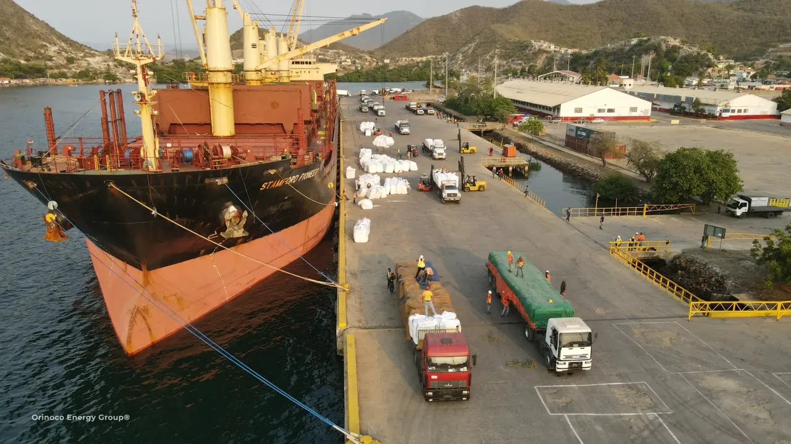
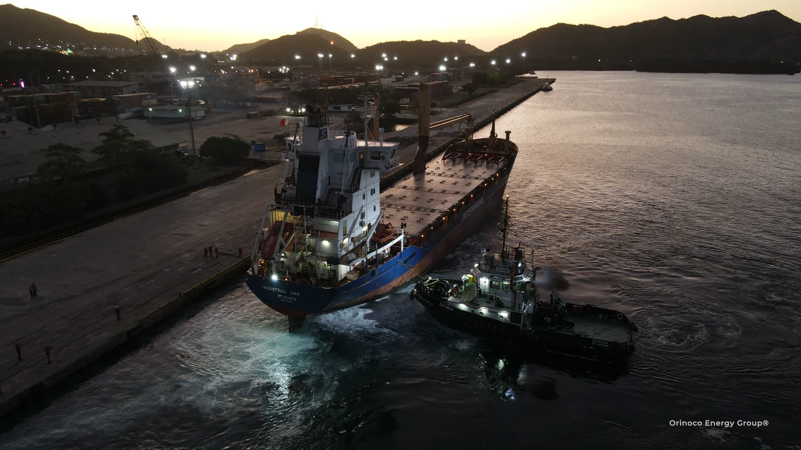
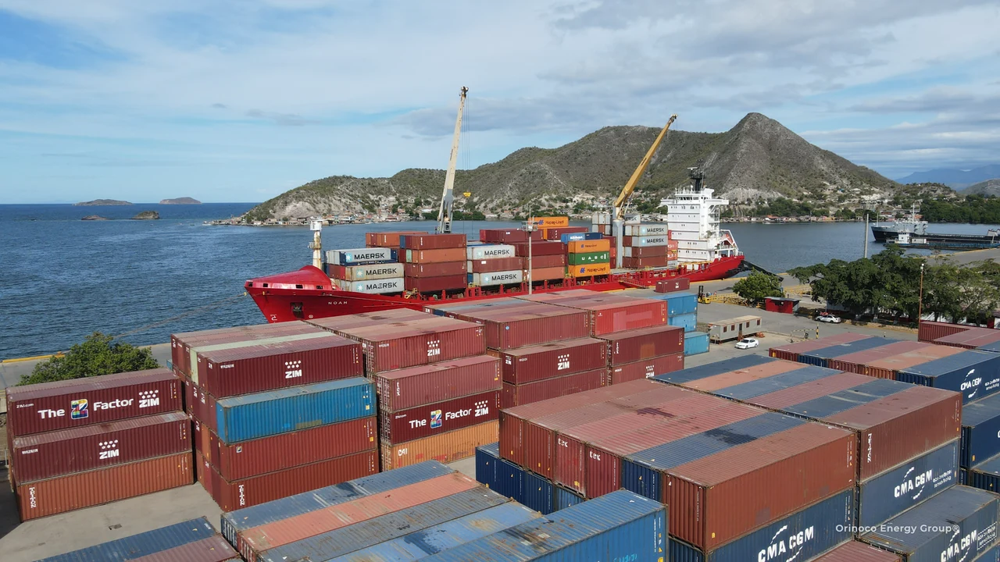

Importaciones, exportaciones y materias primas
HACIA VENEZUELA.
HACIA EL MUNDO.
Suministro internacional para proyectos venezolanos. Logística de exportación para productos del país. Coordinamos las etapas de compra y transporte que necesita cada embarque.
Importación y suministro internacional
DEL PROVEEDOR
AL PROYECTO.
Integramos la procura industrial, la preparación de la carga y el transporte internacional con aduanas y entrega en Venezuela.
Explora la procura internacional ↗Carga de exportación
DE VENEZUELA
A LOS MERCADOS INTERNACIONALES.
Coordinamos proveedores, manipulación, documentos de exportación y transporte de chatarra, metales, graneles, carga general y otras materias primas.
Explora la carga de exportación ↓
Carga en movimiento
PLANIFICAR LA CARGA.
COORDINAR EL RECORRIDO.
Coordinamos recogida, carga, documentos de exportación, operaciones portuarias y transporte internacional a través del grupo y operadores locales.
- Chatarra y metales reciclados
- Graneles y carga general
- Materiales industriales y materias primas
- Planificación de exportaciones en contenedores y carga suelta
Chatarra y metales
EL MANEJO ADECUADO.
DESDE EL INICIO.
Definir descripción, cantidad, presentación, método de carga y requisitos portuarios antes de reservar el transporte internacional.
- 01 / DEFINIREspecificaciones, embalaje o presentación a granel, volumen y disponibilidad de la carga.
- 02 / COORDINARTransporte en origen, estiba local, aduanas y requisitos del buque o contenedor.
- 03 / EMBARCARSeleccionar el servicio marítimo adecuado y planificar la recepción en destino.

Otras categorías de exportación
UNA OFERTA EXPORTABLE.
UN PLAN LOGÍSTICO.
Cuéntanos el producto, el proveedor y el destino. Revisaremos el manejo, la documentación y el transporte necesarios para el embarque.
Cacao, café y cultivos especializados
Cacao en grano, manteca y licor de cacao; café verde; ajonjolí; merey; sarrapia.
Consulta por esta carga ↗Frutas y productos del mar
Mango, aguacate, piña, cítricos, coco, camarón, langosta y productos marinos.
Consulta por esta carga ↗Minerales y productos químicos
Azufre, negro de humo, clínker, urea, metanol y mineral de hierro.
Consulta por esta carga ↗Metales y productos forestales
Lingotes de aluminio, palanquillas de acero, cabillas, alambrón, carbón vegetal y madera.
Consulta por esta carga ↗Los catálogos de exportación ayudan a identificar productos y proveedores. La disponibilidad, las especificaciones y las condiciones comerciales se confirman con el proveedor para cada consulta.
Bancoex · Referencia de oferta exportable ↗
Coordinación de importaciones y exportaciones
MÁS ALLÁ
DEL TRAMO MARÍTIMO.
Coordinamos procura, transporte en origen, trámites de exportación y entrega a través de nuestras empresas y aliados locales.
Explora la red de coordinaciónTu próximo proyecto
VAMOS A
HACERLO AVANZAR.
Cuéntanos qué necesitas trasladar, desde dónde y hacia qué destino.
Conversemos sobre tu proyecto